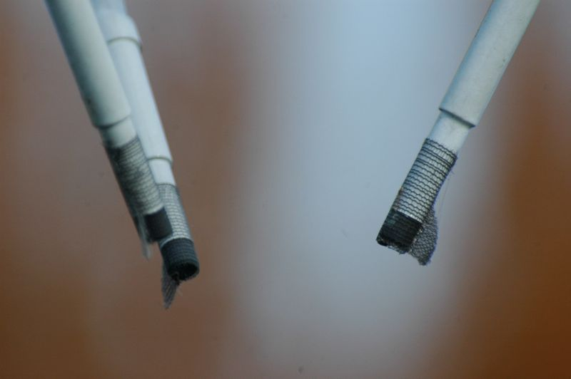

This close-up of the transducers of the ultrasonic-anemometer shows wicks that promote the drainage of small water droplets. What is the problem of water droplets on the transducers?
Page: 6 of 11 (54%)